Перед тем как начать Модуль 1
К концу модуля у вас будет работающее устройство — управляемая лампа, которой управляет ваш код. Дальше — что должно лежать на столе.
На столе у каждого ученика
Найдите эти детали на столе. Если чего-то не хватает — скажите ментору до начала.
Общее на лабораторию
Что нужно знать заранее
- Читать по-русски — да
- Математика — нет, базовых знаний достаточно
- Программирование — нет, код вы напишете в паре с ИИ
⚠️ Безопасность
- Блок питания включает ментор. Вы соединяете провода на обесточенной плате.
- Никогда не подавайте 5 V или 12 V на пин Pico. Чип сгорит мгновенно. На Pico — только 3.3 V.
- Не коммутируйте 220 V. Реле умеет, но в этом модуле — только 3.3 V.
Сколько времени это займёт
Модуль рассчитан на 4–6 занятий. Можно пройти быстрее или медленнее — темп ваш.
Заметил у себя что-то из этого — остановись и сделай по правой колонке
| Сигнал | Что делать |
|---|---|
| Залип на 15+ минут на одном шаге | Открой протокол «застрял» (✋ внизу справа) |
| Скопировал код от ИИ и запустил, не читая | Открой код, переведи каждую строку на русский ВСЛУХ |
| После урока не помнишь, что делал | Запиши 3 предложения о сегодня в портфолио |
| На «Стоп. Проверь себя» автоматически отвечаешь «всё понятно» | Попроси ИИ задать тебе 3 контрольных вопроса |
| Решил «доделаю дома» три раза подряд | Скажи ментору вслух — это сигнал блока, не лени |
Зажгите светодиод за 5 минут
Самая простая цепь в мире: источник + светодиод + два провода. Сделайте это руками, понимание придёт на следующем шаге.
Настрой ИИ-чат на роль напарника, не решателя
Скопируй этот текст и отправь первым сообщением в ChatGPT или Claude. Без этого ИИ будет давать готовые решения, и через 2 дня ты ничего не запомнишь. Это правило на весь Модуль 1, не только на сегодня.
Ты мой напарник по электронике. Я школьник 12-17 лет, учусь собирать электронные устройства. Правила: 1. Не давай мне готовые решения сразу. 2. Сначала задай 1-2 уточняющих вопроса, чтобы понять что я уже знаю. 3. Если я ошибся — спроси что я попробовал, не давай ответ. 4. Объясняй простыми словами, без университетских терминов. 5. Когда я понял — кратко подтверди и предложи следующий шаг. Готов начать?
Что делать
+3.3V → длинная ножка LED+3.3V платы ATX, другой — к длинной ножке светодиода. Винты затяните до упора.GNDGND. Закрутите винт.• Переверните LED — длинная ножка должна быть на
+3.3V• Проверьте винты — все затянуты?
• Ментор точно включил ATX?
Что такое цепь и почему LED загорелся
Вы только что сделали — теперь объясним, почему это сработало. Одно ключевое правило.
Аналогия: водовод
Представьте кран дома. Вода не выходит «наружу» — она возвращается в водоканал по сливу. Круг замкнут, вода течёт.
Электроны работают так же: выходят из плюса +3.3V, идут через LED, возвращаются в минус GND. Этот круг — цепь.
Два состояния цепи
- Замкнутая — круг целый, ток течёт, LED горит
- Разомкнутая — разрыв в круге, ток остановился, LED погас
Проверьте руками
Ответь себе на 3 вопроса (вслух или в уме)
- Что вы только что сделали с проводом, чтобы LED погас?
- Почему ток перестал течь, когда вы оторвали провод?
- Если на «всё понятно» — попросите ИИ задать вам 3 вопроса о замкнутой цепи. Не ответили хотя бы на 2 — значит ещё нет.
Переверните LED. Что будет?
Поменяйте местами концы светодиода и посмотрите. Это проверка знания — и полезный навык на всю жизнь.
+3.3V, длинная — на GND.Почему так
Внутри светодиода — маленький кристалл, пропускающий ток только в одну сторону. Как односторонняя дорога. Ток пошёл в другую сторону — не пропустило.
Это свойство называется полярность. У LED два вывода:
- Длинная ножка = плюс (+), называется анод
- Короткая ножка = минус (−), называется катод
Объясните соседу за 30 секунд
Научить = понять. Если вы можете объяснить другому — значит сами разобрались. Это тренировка главного инженерного навыка.
Что должно получиться (пример ответа)
Через 2 дня вернись и ответь без подглядывания
- Что такое замкнутая цепь?
- Какая ножка LED длиннее — плюс или минус?
- Что произойдёт, если оторвать один провод?
Теперь палец управляет LED
Добавим кнопку в цепь. Теперь LED горит не всегда, а только когда вы нажимаете.
- Провод 1:
+3.3V→ одна ножка кнопки - Провод 2: другая ножка кнопки → длинная ножка LED
- Провод 3: короткая ножка LED →
GND
Что внутри кнопки и провода
Два маленьких, но важных знания: как работает кнопка и что умеет мультиметр.
Кнопка — это пружина
Внутри тактовой кнопки — две металлические пластины и пружина. Нажали пальцем — пружина прижимает пластины друг к другу, цепь замкнулась. Отпустили — пружина оттолкнула, цепь разорвалась.
По сути кнопка делает то же, что вы делали пальцем в Цикле 1: замыкает и размыкает цепь.
Что внутри провода
- Медь внутри — много «свободных» электронов, готовы двигаться
- Пластик снаружи — изолятор, ток не уходит в вас
Поэтому провод можно спокойно держать руками.
🔊 Прозвонка — глаза инженера
Мультиметр в режиме 🔊 пропускает через щупы маленький ток и проверяет целостность провода:
- Пикает → провод целый, ток проходит
- Тишина → обрыв или изолятор
Ответь себе на 3 вопроса
- Что внутри кнопки физически делает её «кнопкой»? Что движется?
- Почему провод в изоляции можно держать в руках, а оголённый конец — нет?
- Если на «всё понятно» — объясните вслух разницу между проводником и изолятором за 30 секунд. Засеките таймер.
Замерьте все три линии ATX
Мультиметр — не игрушка из описания, а инструмент. Научитесь им пользоваться на практике.
- Переключатель на
V=(постоянное напряжение) - Чёрный щуп в гнездо
COM - Красный щуп в гнездо
VΩmA
GND ATX. Красным касайтесь по очереди трёх клемм:| Линия | Ваш замер | Должно быть |
|---|---|---|
+3.3V | ___ В | ~3.3 |
+5V | ___ В | ~5.0 |
+12V | ___ В | ~12.0 |
🔊. Один щуп на один конец провода, другой — на другой. Должно пикнуть — провод целый.12V в пин Pico = моментальная поломка. Перед подключением Pico всегда проверяйте линию.Зачем нужна кнопка?
Кажется очевидно, но попробуйте сформулировать — это тренирует мышление.
Через 2 дня вернись и ответь без подглядывания
- В каком режиме мультиметра нужно проверять напряжение?
- Что значит, если мультиметр пикает в режиме прозвонки?
- Почему 12V в Pico — это сразу поломка?
Реле щёлкает — LED горит
Добавляем посредника. Кнопка теперь не включает LED напрямую — она включает реле, а реле включает LED.
+3.3VATX →COMрелеNOреле → длинная ножка LED- Короткая ножка LED →
GNDATX
+3.3V→ одна ножка кнопки- Другая ножка кнопки →
INреле DC+реле →+3.3VDC−реле →GND
Электромагнит внутри коробочки
Реле — это просто электрический выключатель, управляемый другим током.

Как работает
Внутри реле — маленький электромагнит (катушка проволоки на железном сердечнике) и металлическая пластина-контакт.
- На вход
INприходит 3.3V → катушка становится магнитом - Магнит притягивает пластину → замыкает силовую цепь
- Слышен щелчок — это пластина ударилась
- Убрали сигнал → магнит выключился → пружина оттолкнула пластину обратно
Шесть выводов реле
Управление (слабый ток, 3.3V):
DC+ — питание катушки (3.3V)
DC− — земля (GND)
IN — сигнал «включись»
Сила (коммутируемая цепь, может быть до 220V):
COM — общий вход
NO — Normally Open, замыкается при сигнале
NC — Normally Closed, размыкается при сигнале
Зачем вообще реле
Pico может выдать на свой пин максимум 0.025 ампер. Хватит на LED, но не на мотор или 220V-лампу. Реле — посредник: принимает слабый сигнал от Pico, коммутирует сильный ток от отдельного источника.
Где встречаете реле каждый день: машины (стартер, клаксон), холодильники, кондиционеры, умные розетки.
Ответь себе на 3 вопроса
- Что заставляет якорь реле двигаться в момент, когда вы нажали кнопку?
- Откуда берётся щелчок — что физически произошло?
- Если на «всё понятно» — попробуй предсказать: что будет, если оборвать провод между Pico и DC+ реле? Реле сработает или нет? Почему?
Переключите NO → NC. Что изменится?
Проверьте теорию на практике. Гипотеза: если NO замыкается при нажатии, то NC должно работать наоборот.
NO реле (тот, что идёт к LED). Переставьте его в NC. Всё остальное оставьте.- Кнопка не нажата → LED горит
- Кнопка нажата → LED гаснет
Поведение обратное Цикла 3 начала!
Что узнали
- NO (Normally Open) — в покое разомкнут, замыкается при сигнале
- NC (Normally Closed) — в покое замкнут, размыкается при сигнале
- Оба вывода на одном реле одновременно — можно выбирать логику
Зачем посредник, если напрямую работало?
Тонкий вопрос: в Цикле 2 кнопка напрямую включала LED. Зачем усложнять?
Через 2 дня вернись и ответь без подглядывания
- Чем NO отличается от NC у реле?
- Что внутри реле физически двигается, когда оно срабатывает?
- Зачем реле, если кнопка тоже умеет включать LED напрямую?
Код вместо пальца
Pico заменит кнопку. Код, который вы напишете с ИИ, будет автоматически включать и выключать реле. Это первое в вашей жизни программно-управляемое устройство.
- Уберите кнопку и 2 провода, которые к ней шли
- Pico
GP15→INреле - Pico
3V3→DC+реле - Pico
GND→DC−реле
Напиши программу на MicroPython для Raspberry Pi Pico. Управляй реле на пине GP15. Включай на 1 секунду, выключай на 1 секунду, бесконечно. Используй while True и sleep.
Pico, MicroPython и каждая строка кода
ИИ написал код — вы сейчас разберёте его построчно. Это главный навык ИИ-инженерии: использовать, понимая.
Что такое Pico
Raspberry Pi Pico — микроконтроллер размером с палец. Внутри: процессор, память, 40 пинов для связи с внешним миром. Это маленький компьютер, который выполняет ваш код автономно — без ноутбука.
MicroPython — упрощённая версия Python для таких чипов. Пишете как обычный Python, но он управляет железом.
Ваш код построчно
from machine import Pin from time import sleep relay = Pin(15, Pin.OUT) while True: relay.value(1) sleep(1) relay.value(0) sleep(1)
| Строка | Перевод на русский |
|---|---|
from machine import Pin | «Подключи команды для работы с пинами» |
from time import sleep | «Подключи команду задержки» |
relay = Pin(15, Pin.OUT) | «Пин 15 — выход, назову его relay» |
while True: | «Повторяй бесконечно» |
relay.value(1) | «Подай 3.3V на пин» → реле включается |
sleep(1) | «Ждать 1 секунду» |
relay.value(0) | «Подай 0V» → реле выключается |
sleep(1) | «Снова ждать 1 секунду» |
1. Прочитать код построчно, перевести каждую строку на русский
2. Сравнить с ожиданием — делает ли код то, что вы просили
Только потом запускать.
Ответь себе на 3 вопроса
- Что делает строка
while True:и почему она написана именно так — что значит двоеточие в конце? - Что произойдёт, если убрать
sleep(1)из обоих мест в коде? - Если на «всё понятно» — попроси ИИ показать что произойдёт, если поменять
value(1)наvalue(0)в обоих местах. Сначала угадай сам, потом сравни.
Ваш собственный режим мигания
Модификация существующего кода — 80% работы инженера. Выберите режим или придумайте свой.
Варианты на выбор
- Ровное — 1 секунду горит, 1 не горит (как сейчас)
- Быстрое — 10 миганий в секунду
- SOS в Морзе — 3 коротких, 3 длинных, 3 коротких, пауза, повтор
- Свой вариант — ритм сердца, Морзе другой буквы, имитация свечи...
Попросите ИИ изменить код
Пример промпта для SOS:
Измени мой код: пусть LED мигает SOS в Морзе. Короткое — 0.2 сек, длинное — 0.6 сек. Пауза между буквами — 0.3 сек, между повторами — 2 сек.
Портфолио и защита перед ментором
Это большое SHARE — завершение всего Модуля 1. Через год вы откроете портфолио и увидите здесь начало своего пути.
1. Фото и видео
2. Запись в портфолио
- Фото и видео
- Ваш финальный код
- Teardown-заметка (3 вопроса): что понял / что было сложно / что улучшил бы
- Самооценка: интересно 1–5, понятно 1–5
3. Защита перед ментором
Ментор задаст три вопроса. Отвечайте своими словами, не подглядывая:
- Как работает ваша цепь? (от плюса ATX до LED и обратно)
- Что делает каждая строка кода?
- Если LED перестанет мигать — с чего начнёте искать проблему?
4. Teardown и уборка
- Сохраните код в файл у себя
- Разберите устройство
- Компоненты на стеллаж
- Протрите рабочее место
Вы собрали реальное программно-управляемое устройство, объяснили как оно работает, записали в портфолио. Это первое свидетельство того, что вы — начинающий инженер.
Отложенная проверка через 2 дня
Через 2 дня ответьте себе без методички и без ИИ:
- Что делает
pin.value(1)? - Почему нельзя 12V напрямую в пин Pico?
- Что покажет прозвонка на целом проводе?
Если вспомнили — знания ваши. Если нет — вернитесь к нужному циклу перед Модулем 2.